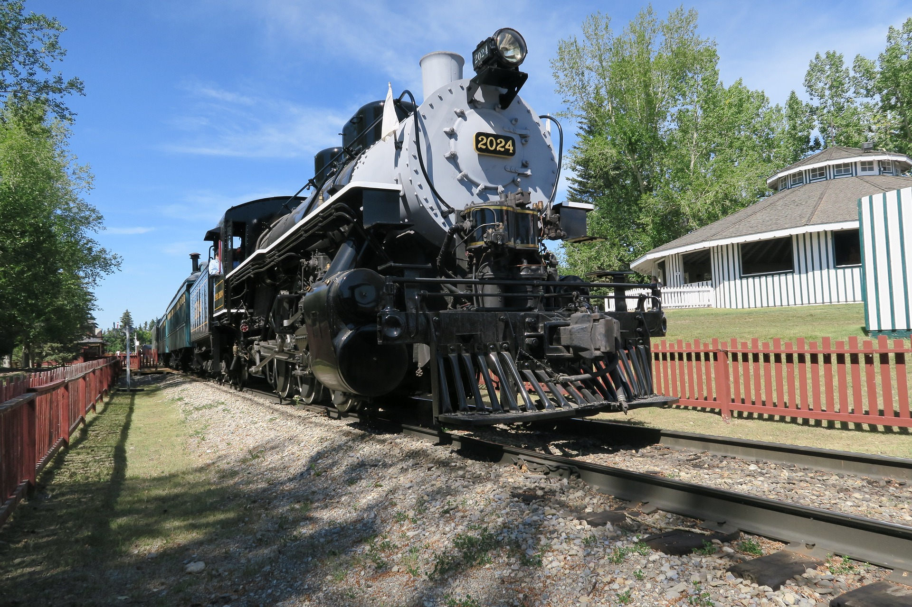

HistoryEarly YearsCalgary Alberta located in southern Prarie Province was founded in 1875 by what we know today as the Royal Canadian Mounted Police. It was originally founded as Fort Brisebois later renamed For Calgary as the town developed. Calgary rapidly developed and grew as it became one of the stops for the Canadian Pacific Railway, with CPR being a major landowner and funneled money into agricultre. This lead to a mass expansion and many farmers moving in, with the railway and large farming community to did not take long for Calgary to become the main shipping centre for the cattle industry. |
||||
|  | ||||
Discovery of Oil and GasIn Turner Valley in 1914 a discovery was made that would change Calgary forever. Natural Gas was found with this spurred a a whole new level of growth especially after Albertas first petroleum refinery opened in 1923. It only took a few years for another to open after this. Massive investments where made into the city for sureveying, drilling, transportation and piplines in order to get this commodity out of the ground and into production. This lead to an economic boom and more growth making Calgary the oil and gas hub it is today. |
||||
The City TodayToday the city is still a oil and gas hub but because of the econimic infulence of the energy sector their are jobs in almost any field. With a rapidly expanding city that is covered in snow for the majority of the year it is now home to ~1.4 million canadians. This is due to the high standard of living, friendly people, strong job market and the warming chinooks that occur in the city. |
||||